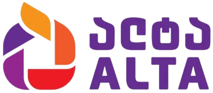
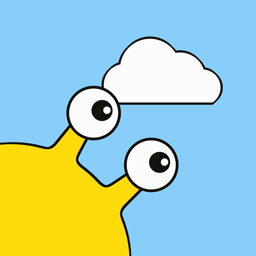

Saïna, Bordeaux · internship, 2025
Saïna, Bordeaux · internship, 2025
Weld seam analysis for engineering simulations
A desktop tool that parses ANSYS results, finds weld seams, manages materials and fatigue cycles, and renders it all in 3D. I was the only engineer, for six months.
I build AI systems that run unattended in production, and the verification that makes them trustworthy.
I ship with AI coding agents and verify every change with automated tests.
It starts in Georgian and switches to English, French or Russian if you do. It knows Satli's products and can pass a message to the team.
We would especially highlight Satli's professionalism, fast support and proactive approach to product development. Throughout our cooperation they were always focused on our business needs and on getting the most out of the platform.

Nona Baindurashvili, CEO of Alta · recommendation letter, translated from Georgian École 42, FranceStarted in Angoulême
Common core in 7 monthsA shell, a raycaster, an IRC server, a web app
École 42, FranceStarted in Angoulême
Common core in 7 monthsA shell, a raycaster, an IRC server, a web app
 First call-analysis prototypeSpeech-to-text and speaker separation on real calls
First call-analysis prototypeSpeech-to-text and speaker separation on real calls
 Founded SatliAnd the tooling to onboard, license and bill clients
DialyzeAI live at AltaEvery call reviewed, back to January
Founded SatliAnd the tooling to onboard, license and bill clients
DialyzeAI live at AltaEvery call reviewed, back to January
 CatalogueAIProduct catalogues from a list of models
CatalogueAIProduct catalogues from a list of models
 TekstisAIThe same engine, for chats and comments
TekstisAIThe same engine, for chats and comments
 ZariAIA phone agent that speaks Georgian
ZariAIA phone agent that speaks Georgian

Yvito TVA self-running channel on four platforms VertAPIAlerts and an API over public registries
VertAPIAlerts and an API over public registries
Yvito TV
DialyzeAI transcribes and scores every call at Alta, a Georgian electronics retailer. A truth-check gate verifies each AI finding against the transcript.
 Saqme To Do, open source
Saqme To Do, open source
Markdown lists you and your AI edit together, on desktop and phone. The engine exists in two languages, kept identical by one shared test suite.
 Saïna, Bordeaux · internship, 2025
Saïna, Bordeaux · internship, 2025
A desktop tool that parses ANSYS results, finds weld seams, manages materials and fatigue cycles, and renders it all in 3D. I was the only engineer, for six months.
DialyzeAICall analytics and QA
ZariAIGeorgian-first AI phone agent
kaGeorgian ASR benchmarkSpeech recognition on phone audio, in progress
VertAPIAlerts and API over Georgian public registries
Client operationsOnboarding, licensing and billing for Satli clients
École 42Systems projects in C and C++
TekstisAIAnalytics for chats, tickets and comments
CatalogueAIProduct catalogues from a model list